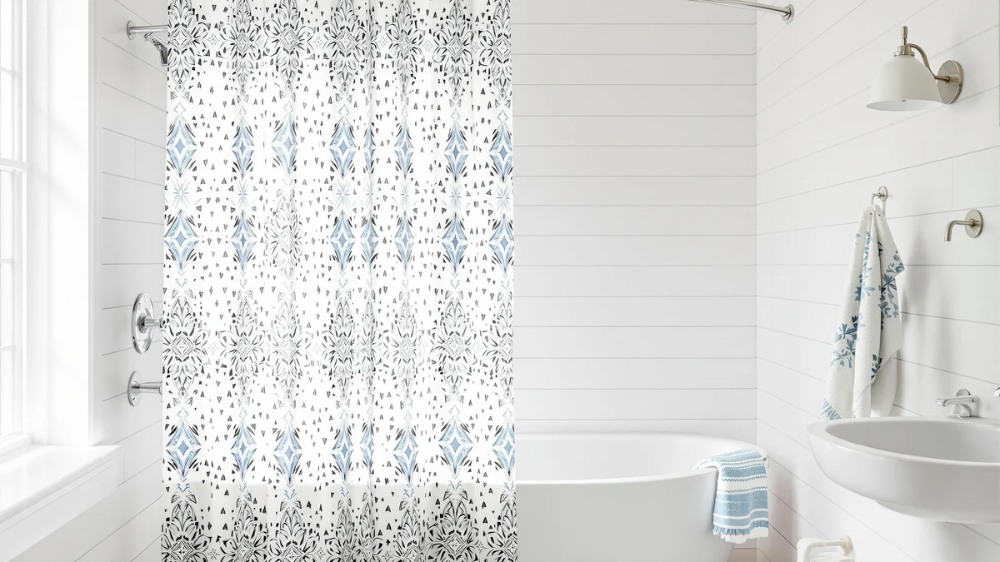

Best Boho Shower Curtains for a Bohemian Bathroom (2026)
Prices and picks verified as of August 2026. Independent, reader-supported reviews.


Quick Answer
We compared eight of the best boho shower curtains on Amazon for fabric, drape, price, and verified owner reviews. The AmazerBath Boho Shower Curtain Modern wins for most bathrooms: a warm, textured print, a water-resistant polyester and PEVA blend, and a 4.6-star rating across 1,079 reviews at $19.99.
Our pick: AmazerBath Boho Shower Curtain Modern, $19.99 Check Price on Amazon
Bottom line: our top pick is the AmazerBath Boho Shower Curtain at $19.99. The best budget option is the Naturoom Natural Linen Shower Curtain at $13.48.
Things to Know Before You Buy
- Cotton needs a liner, most others do not. The one 100% cotton pick in this lineup, the Linen Shower Curtain Beige Boho, is not waterproof and needs a separate liner behind it. The polyester and PEVA-blend curtains here resist splashing well enough that many owners hang them alone in a stall shower.
- "Linen" usually means linen-look, not flax. Most boho shower curtains labeled "linen" are actually a polyester or polyester-PEVA blend woven to mimic linen's texture. It holds up to humidity better than real flax linen and costs far less.
- Standard size is 72 by 72 inches. All eight picks in this guide use that footprint, which fits a standard tub or stall with a typical shower curtain rod. Measure first if your stall is narrower or your rod sits higher than average.
- Pattern and texture do the work in a boho bathroom. Waffle weave, slubby linen texture, and warm neutral tones read as boho even in a plain solid color, so you do not need a busy print to hit the look.
- Price mostly tracks review volume, not quality. Seven of the eight picks here run $13 to $20. The one outlier, at $52.24, is a pinch-pleated style with a more tailored header, not a proof that it drapes better.
The best boho shower curtains bring warm, earthy texture into a bathroom without turning the space into a costume set. A plain white plastic liner does the job, but it does nothing for a room built around rattan shelves, terracotta pots, and woven bath mats. A linen-look or waffle-weave curtain in a soft neutral tone pulls the whole look together, and it costs about the same as the generic option you would have bought anyway.
We compared eight boho shower curtains across fabric, price, rating, and review count, pulling from listings with real customer feedback rather than marketing copy. Materials split into three groups: polyester and PEVA blends styled to look like linen, one true 100% cotton curtain, and a pinch-pleated linen-look option with a more tailored header. Prices run from $13.49 to $52.24, and every pick here holds at least a 4.3-star average.
The AmazerBath Boho Shower Curtain Modern leads the group for most bathrooms, pairing a warm, textured print with a water-resistant blend and the strongest combination of rating and review volume at this price. If you want a true cotton feel, a tighter budget, or a more tailored pleated header, we cover those alternatives below along with the honest drawbacks of each.
Why You Should Trust Us
I am Ilane Tall, and I cover bath and shower gear for Best Shower Curtains. For this guide to the best boho shower curtains, I focused on the details that decide whether a curtain earns its keep in a real bathroom: whether the fabric actually needs a liner, how the price compares across similar styles, and what verified buyers say once the curtain has been hanging for a few months.
We do not own or install every curtain we cover. Instead, we research listings closely, cross-check specs against the manufacturer's own description, and weigh customer ratings against review volume, since a 5-star average built on five reviews tells you far less than a 4.6-star average built on a thousand. Every price, material, and rating in this guide comes from the current Amazon listing, and we flag it clearly when a pick has a thin review history.
How We Picked
We started with a wide list of candidates for the best boho shower curtains in linen, linen-look, and waffle-weave fabrics, then narrowed the field by rating, review count, and price spread. We excluded curtains rated under 4.0 stars and anything with a print too far from the warm, neutral boho palette, since a bright geometric or novelty print does not fit the brief even if the specs check out.
We also wanted a real range of price points and fabrics rather than eight near-identical polyester panels. That is why this guide includes a true cotton option, a budget waffle weave under $14, and a pinch-pleated premium pick, alongside five solid mid-range linen-look curtains that differ mainly in tone and review history. We weighed heavily how each listing's material claims held up against its price, since a curtain marketed as "linen" for $14 is almost always a blend, not flax.
How We Compared
We compared each of the best boho shower curtains in this guide on the same set of facts: listed material, panel size, current price, star rating, and total review count, all pulled directly from the live Amazon listing rather than promotional copy. Where a listing described the fabric as linen, we checked whether the material was true flax or a linen-look polyester blend, since the difference matters for both care and price.
We also weighed review count against rating, because a strong average built on a small sample carries less weight than a slightly lower average from over a thousand verified buyers. Reviewers consistently note whether a curtain wrinkles out of the packaging, whether it needs a separate liner, and how the color holds up under bathroom humidity, and we folded that owner feedback into the pros and cons below alongside the raw specs.
Our Picks

AmazerBath Boho Shower Curtain Modern
What we like
- Modern boho print reads as intentional decor, not a generic curtain
- Polyester and PEVA blend resists splashing better than pure fabric
- 1,079 reviews back up the 4.6-star average with real sample size
Flaws but not dealbreakers
- Bolder pattern than the other picks, so it may clash with a busy tile
- Blend fabric feels less soft against skin than a true linen weave
| Material | Polyester / PEVA |
| Size | 72x72 |
The AmazerBath Boho Shower Curtain Modern earns the top spot in this guide by combining a distinct boho print with a fabric blend built to handle a wet bathroom. At $19.99, it sits in the middle of the price range covered here, but the review count sets it apart. With 1,079 verified reviews behind a 4.6-star average, the rating reflects a large, consistent sample rather than a handful of early adopters.
The polyester and PEVA blend means you get more water resistance than the pure cotton pick in this guide, which matters if you plan to hang it without a separate liner in a stall shower. Owners report that the warm, earthy print holds its color through regular washing, and the 72 by 72 inch size fits a standard rod without alteration. The tradeoff is a more graphic pattern than the plainer linen-look options, so it suits a bathroom that wants a clear focal point rather than a subtle texture.

Naturoom Natural Linen Shower Curtain
What we like
- Lowest price among the linen-look picks at $13.97
- 1,340 reviews, the largest sample of any curtain in this guide
- Neutral natural tone pairs easily with most existing decor
Flaws but not dealbreakers
- Slightly lower texture depth than the pinch-pleated premium pick
- Blend fabric, not true linen, despite the natural-linen styling
| Material | Polyester / PEVA |
| Size | 72x72 |
The Naturoom Natural Linen Shower Curtain undercuts most of the field on price while carrying the largest review base of any pick here. At $13.97, it costs less than most of the other polyester and PEVA blends in this guide, and its 1,340 reviews give the 4.6-star average unusual weight for a curtain in this price bracket.
The natural, undyed tone works as a neutral base rather than a statement print, so it fits a boho bathroom that leans more minimalist than maximalist. Owners report that the fabric hangs relatively flat once unpacked and resists the stiff, plasticky feel common in cheaper shower curtains. It is not true flax linen, and reviewers who expect that exact texture may notice the difference, but for the price it delivers the boho look most people are after.

Siiluminisoy White Shower Curtain Fabric
What we like
- 4.7-star average, the highest rating of any pick in this guide
- Clean white color works as a bright, versatile boho base
- Mid-range $15.99 price for a polyester and PEVA blend
Flaws but not dealbreakers
- Only 22 reviews, by far the thinnest sample here
- Plainer look than the printed or textured picks in this lineup
| Material | Polyester / PEVA |
| Size | 72x72 |
The Siiluminisoy White Shower Curtain Fabric carries the highest average rating of any pick in this guide at 4.7 stars, and its clean white colorway makes it the easiest of the eight to slot into an existing bathroom without a color clash. At $15.99, it lands squarely in the middle of the price range.
The catch is sample size. With only 22 reviews, that 4.7-star average comes from a far smaller group of buyers than the 1,000-plus review counts behind several other picks here, so treat it as promising rather than proven. If you want a boho bathroom with a bright, uncluttered base fabric and are comfortable buying on a newer listing, it is a reasonable bet. If you would rather lean on a longer track record, the AmazerBath or Naturoom curtains give you that at a similar price.

Seasonwood Linen Shower Curtain Fabric
What we like
- Earthy tone matches natural-material bathroom decor closely
- Linen-look texture without the care needs of true flax
- 109 reviews give the rating a reasonable sample size
Flaws but not dealbreakers
- 4.4-star average is the lowest of the eight picks in this guide
- Priced the same as AmazerBath's higher-rated, more-reviewed curtain
| Material | Polyester / PEVA |
| Size | 72x72 |
The Seasonwood Linen Shower Curtain Fabric leans into the earthy end of the boho palette, with a tone that pairs naturally with wood shelving, rattan baskets, and terracotta planters. At $19.99, it costs the same as our top pick, which makes the comparison worth making directly.
With a 4.4-star average across 109 reviews, it sits at the lower end of the ratings in this guide, though still comfortably above our 4.0 cutoff. Reviewers consistently note the color and texture as accurate to the listing photos, which matters for a fabric where tone is the whole selling point. If the exact price and rating gap gives you pause, the Naturoom curtain offers a similar look for less, backed by a far larger review count.

Natural Pinch Pleated Linen Curtains
What we like
- Pinch-pleated header gives a tailored, drapery-style look
- 1,838 reviews, the largest sample of any pick in this guide
- 4.6-star average holds steady at real scale, not a small sample
Flaws but not dealbreakers
- Costs more than double the next most expensive pick here
- Pleated header suits a curtain rod better than clip rings
| Material | Polyester / PEVA |
| Size | 72x72 |
The Natural Pinch Pleated Linen Curtains stand apart from the rest of this guide on construction. The pinch-pleated header creates structured folds when hung, closer to a formal window drapery than a typical flat shower curtain panel, and that detail is what pushes the price to $52.24.
The review base behind it makes the price easier to justify. At 1,838 reviews and a 4.6-star average, this is the most established pick in the entire lineup, with a sample size that leaves little doubt about consistency. Owners report that the tailored header holds its shape better than flat curtains after repeated use. It is the priciest of the best boho shower curtains covered here, so choose it when the structured, drapery look matters more to you than a basic texture upgrade.

Linen Shower Curtain Beige Boho
What we like
- 100% cotton construction, the only true natural fiber in this guide
- Beige boho tone works well against wood or wicker fixtures
- Budget-friendly at $15.98
Flaws but not dealbreakers
- Needs a separate liner since cotton is not waterproof
- Lowest rating of the eight picks at 4.3 stars
| Material | 100% cotton |
| Size | 72x72 |
The Linen Shower Curtain Beige Boho is the only 100% cotton curtain in this guide, which makes it stand out for anyone who wants a true natural-fiber fabric rather than a linen-look synthetic. At $15.98, it is priced close to the polyester and PEVA blends, so you are not paying extra for the fiber switch.
Cotton breathes differently than a blend, and reviewers describe it as softer to the touch, but it is not waterproof on its own. Pair it with a PEVA liner to keep water off the floor, the same setup you would use behind any decorative fabric curtain. At 4.3 stars across 144 reviews, it holds the lowest rating in this lineup, though still within a reasonable range, and the tradeoff is worth it if a true cotton texture matters more to you than convenience.

Cream Linen Shower Curtain Natural
What we like
- 410 reviews back a consistent 4.6-star average
- Cream tone is more neutral than beige or white, easy to accessorize
- Mid-pack price at $18.59 for a polyester and PEVA blend
Flaws but not dealbreakers
- Close in look and price to the Naturoom and Seasonwood picks
- No pattern, so it will not stand out as a focal point on its own
| Material | Polyester / PEVA |
| Size | 72x72 |
The Cream Linen Shower Curtain Natural sits in the middle of this guide on price and delivers a rating that holds up at real scale. Its 4.6-star average is backed by 410 reviews, a solid sample that puts it ahead of the thinner-reviewed picks without the premium price tag of the pinch-pleated curtain.
The cream tone reads as slightly warmer than a pure white curtain and slightly cooler than beige, which makes it an easy match if your towels, bath mat, or shower caddy already carry pattern or color. It shares the same fabric blend and 72 by 72 inch size as most of the other picks here, so the decision often comes down to which exact shade of neutral fits your existing tile and fixtures best.

Boho Waffle Shower Curtain White
What we like
- Lowest price in this guide at $13.49
- Waffle weave adds texture without needing a busy pattern
- 4.6-star average across 164 reviews at this budget price
Flaws but not dealbreakers
- White colorway shows less contrast against light-colored tile
- Texture reads more subtle than the printed or pleated picks
| Material | Polyester / PEVA |
| Size | 72x72 |
The Boho Waffle Shower Curtain White is the cheapest pick in this guide at $13.49, and it still holds a 4.6-star average across 164 reviews, matching the rating of curtains priced $6 to $39 higher. The waffle weave gives it dimension without leaning on a print or a strong color, which suits a small bathroom where a busy pattern can feel cramped.
Because it is white, it works as a near-blank canvas for boho accessories like a jute bath mat or a rattan shelf to carry the rest of the look. Owners report the texture holds up through regular washing, and the lighter fabric weight means it dries faster between showers than a heavier linen-look blend. For a rental or a first apartment bathroom, it is hard to find a better price-to-rating ratio among the best boho shower curtains in this guide.
Quick Comparison
| Product | Material | Price | Rating | Best for | Get it |
|---|---|---|---|---|---|
| AmazerBath Boho Shower Curtain Modern | Polyester / PEVA | $19.99 | 4.6 | Everyday boho style | View on Amazon → |
| Naturoom Natural Linen Shower Curtain | Polyester / PEVA | $13.97 | 4.6 | Tight budgets | View on Amazon → |
| Siiluminisoy White Shower Curtain Fabric | Polyester / PEVA | $15.99 | 4.7 | Minimalist boho | View on Amazon → |
| Seasonwood Linen Shower Curtain Fabric | Polyester / PEVA | $19.99 | 4.4 | Wood and wicker decor | View on Amazon → |
| Natural Pinch Pleated Linen Curtains | Polyester / PEVA | $52.24 | 4.6 | A tailored, drapery look | View on Amazon → |
| Linen Shower Curtain Beige Boho | 100% cotton | $15.98 | 4.3 | True cotton with a liner | View on Amazon → |
| Cream Linen Shower Curtain Natural | Polyester / PEVA | $18.59 | 4.6 | A neutral, versatile base | View on Amazon → |
| Boho Waffle Shower Curtain White | Polyester / PEVA | $13.49 | 4.6 | Small bathrooms and rentals | View on Amazon → |
The Competition
A couple of these picks land lower in this guide for specific, addressable reasons rather than a broad flaw. The Siiluminisoy White Shower Curtain Fabric holds the highest rating here at 4.7 stars, but with only 22 reviews it has not built the track record that curtains like the Naturoom or the pinch-pleated linen curtain have earned across more than a thousand buyers. The Linen Shower Curtain Beige Boho scores lowest at 4.3 stars and requires a separate liner, which is a real inconvenience if you were hoping to skip that step.
We also passed over plain plastic and vinyl shower curtains entirely, since a solid-color PEVA liner does not fit the boho brief no matter how well it performs on paper. We excluded anything under a 4.0-star rating and any listing with fewer than 20 reviews, since a rating with almost no data behind it is easy to overturn with the next handful of reviews. After weighing fabric, price, and review history across all eight, the best boho shower curtains for most bathrooms still center on the AmazerBath Boho Shower Curtain Modern, with the Naturoom as the strongest budget alternative.
Frequently Asked Questions
Do boho shower curtains need a liner?
It depends on the fabric. The cotton pick in this guide, the Linen Shower Curtain Beige Boho, is not waterproof on its own, so you hang a separate liner behind it. The polyester and PEVA-blend picks, including the AmazerBath and Naturoom curtains, resist splashing well enough that many owners skip a liner in a stall shower, though a liner still protects the floor in a bathtub setup.
What fabric looks most boho for a shower curtain?
Linen and linen-look polyester dominate the boho category because the slubby weave and warm, undyed tone read as natural and handmade. Waffle weave adds texture without pattern, while pinch-pleated headers bring a more tailored, higher-end look if you want the style without full cotton linen.
How much should you pay for a boho shower curtain?
Most solid boho shower curtains fall between $13 and $20, and the picks in this guide follow that range with the exception of the pinch-pleated linen curtain, which runs closer to $52 for a more structured, tailored construction. Paying more only makes sense if you want that pleated header or a specific premium fabric weight.